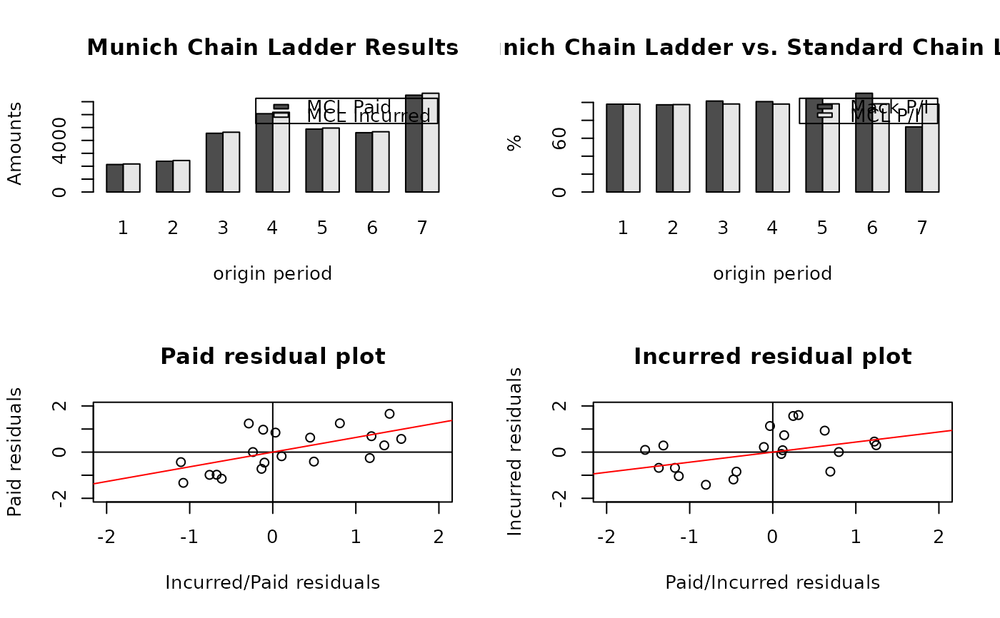

Plot method for a MunichChainLadder object
plot.MunichChainLadder.Rdplot.MunichChainLadder, a method to plot the output of
MunichChainLadder object. It is designed to give a quick
overview of a MunichChainLadder object and to check the
correlation between the paid and incurred residuals.
Arguments
- x
output from
MunichChainLadder- mfrow
see
par- title
see
title- ...
optional arguments. See
plot.defaultfor more details.
Details
plot.MunichChainLadder shows four plots, starting from the top
left with a barchart of forecasted ultimate claims costs by
Munich-chain-ladder (MCL) on paid and incurred data by origin period;
the barchart next to it compares the ratio of forecasted ultimate
claims cost on paid and incurred data based on the Mack-chain-ladder and
Munich-chain-ladder methods; the two residual plots at the bottom show the
correlation of (incurred/paid)-chain-ladder factors against the
paid-chain-ladder factors and the correlation of
(paid/incurred)-chain-ladder factors against the incurred-chain-ladder
factors.
Note
The design of the plots follows those in Quarg's (2004) paper: Gerhard Quarg and Thomas Mack. Munich Chain Ladder. Blatter DGVFM 26, Munich, 2004.
See also
See also MunichChainLadder
Examples
M <- MunichChainLadder(MCLpaid, MCLincurred)
#> Warning: 'loglinear' model to estimate sigma_n doesn't appear appropriate.
#> p-value > 5.
#> est.sigma will be overwritten to 'Mack'.
#> Mack's estimation method will be used instead.
#> Warning: 'loglinear' model to estimate sigma_n doesn't appear appropriate.
#> p-value > 5.
#> est.sigma will be overwritten to 'Mack'.
#> Mack's estimation method will be used instead.
plot(M)
